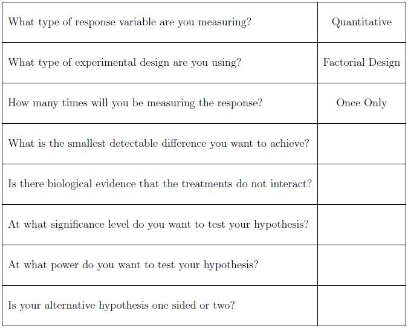

Quantitative
:
Factorial
: Checklist
The following is a checklist that may be helpful to take with you when you consult with a statistician. This provides some information that is important to know before your consultation.

--
ErinEsp
- 13 Mar 2010